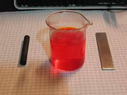
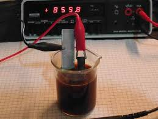
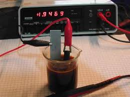
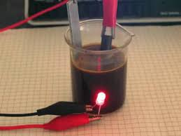

Dopo un paio di post "storici", devo mantenere la promessa di mettere mano alla vetreria!
Lo faccio arrangiando una piccola Grenet dimostrativa, giusto per verificare quanto affermato precedentemente e per ritornare, appena possibile, in stretta sintonia col titolo di questo blog.
Materiale occorrente
- potassio bicromato K2Cr2O7
- acido solforico H2SO4
- una lamina di zinco
- un cilindretto di carbone di storta
- un multimetro digitale
In un becker da 50 ml preparare una soluzione di 3,5 g di K2Cr2O7 e 3 ml di H2SO4 conc. in 40 ml di acqua.
Si otterrà una bella soluzione rosso vivo, dovuta alla colorazione dell'acido cromico H2CrO4 formatosi.
Preparare anche una lamina di zinco (la mia era mm 10x80, spessore 2 mm) e un cilindretto di carbone di storta, per esempio recuperandolo da una vecchia pila zinco-carbone.
(Attenzione che queste pile sono in via di estinzione (sostituite da quelle alcaline) e pertanto è meglio recuperare fin che si può questi elettrodi di carbone, che torneranno utilissimi in tanti esperimenti di elettrochimica spicciola).

I componenti
Lo scopo di questo lavoro era verificare i parametri tensione/corrente della pila e quindi è indispensabile almeno un tester affidabile; ho usato il multimetro Schlumberger che si vede in seguito nelle immagini.
Collegare i puntali dell'apparecchio ai due elettrodi, immergere prima l'elettrodo positivo (il carbone) e sistemarlo in modo che sia stabile e non vada poi a toccare la lamina di zinco una volta immersa.
Regolare il tester, e immergere quest'ultima andando subito a misurare la corrente di corto circuito: 860 mA!

Misura della corrente di c.c.
Considerata la superficie immersa dell'elettrodo di carbone (5,5 cm2) ne risulta una densità di corrente di più di 15 A/dm2, come una robusta elettrolisi!
Naturalmente la corrente di c.c. non è mantenibile per lungo tempo, perchè tende subito a diminuire per polarizzazione (gli elettrodi si rivestono di un velo di gas che li isola parzialmente) e la misura va quindi effettuata velocemente.
Si notano in queste condizioni di c.c. le intense reazioni redox nella soluzione: lo zinco passa in soluzione e si ricopre istantaneamente di una patina verdastra (solfato di cromo Cr2(SO4)3 che cola nel liquido e lo scurisce velocemente).
Estrarre lo zinco, lasciar respirare un attimo la povera pila tirata per i capelli e andiamo poi a misurare la tensione a circuito aperto: ecco fatto, 1,947 Volt. Perfetto, come da teoria!
Nel post precedente si era calcolata la tensione come 1,99 Volt: il risultato pratico ne conferma il valore quasi perfettamente allineato con la teoria, c.v.d.

Misura della tensione a vuoto
Non resta che provare a collegare un carico qualsiasi funzionante a bassa tensione; è abbastanza scontato scegliere un LED, che almeno ci fa vedere in maniera "lampante" che la pila emette potenza elettrica.

Pila e LED
Eccoli bello illuminato! Naturalmente, dato il minimo assorbimento (una ventina di mA) questa piletta dimostrativa potrebbe tenerlo acceso per un'infinità di tempo, se non fosse... per la mancanza di mercurio!
Nella vera pila Grenet l'elettrodo negativo era formato da una lamina di zinco amalgamato, per diminuire la corrosione del metallo in acido con relativo svolgimento di idrogeno (non metto la reazione!).
In questa pila dimostrativa non mi sono preso la briga di amalgamare la lamina ed ho usato zinco puro, pertanto esso reagisce anche a circuito aperto sviluppando idrogeno e consumandosi inutilmente.
Ma era scontato che questo generatore avesse in ogni caso vita breve... il tempo di fare qualche foto e nulla più!
Ora devo trovare il sistema di arrangiare in qualche modo un piccolo vaso poroso per un altro esperimento elettrochimico che mi sta a cuore da tempo (ben più complesso di questo!); appena possibile se ne riparlerà.